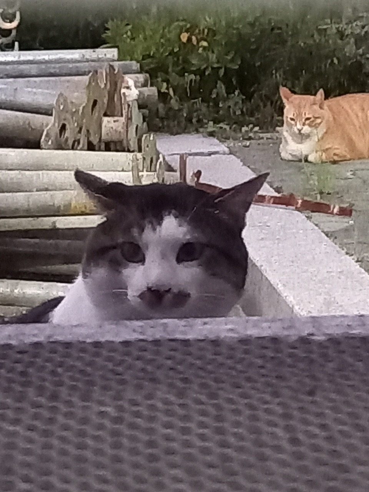
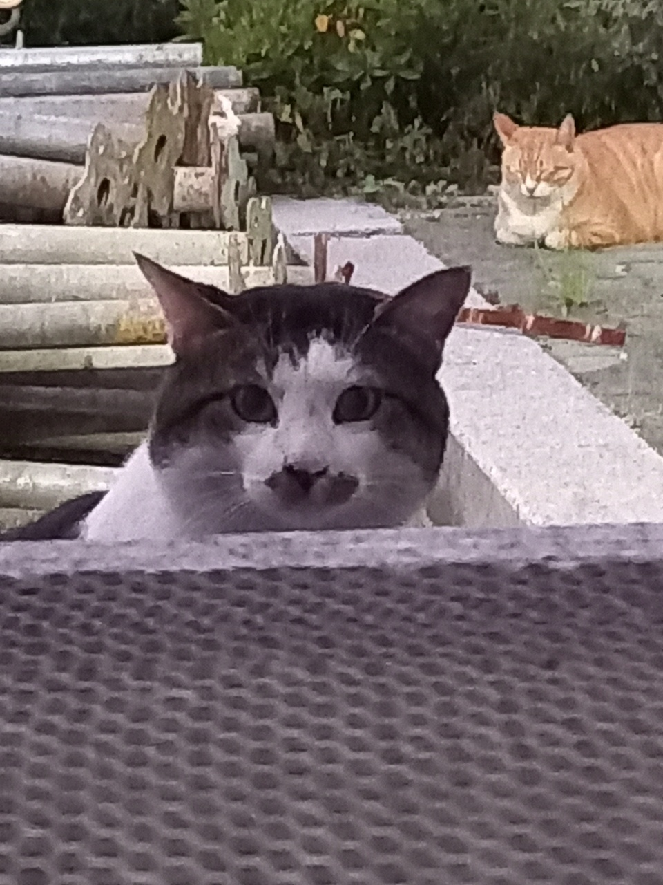
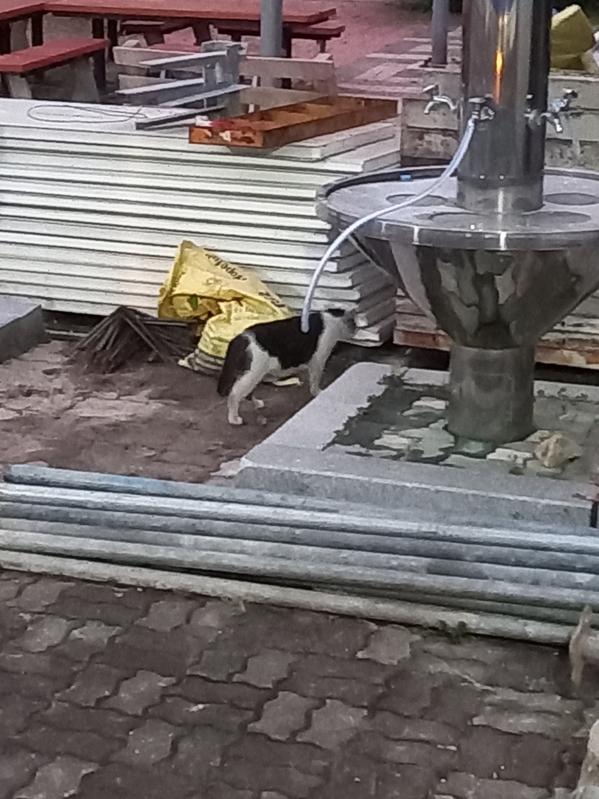

이 웹은 오작공원에 등장하는 크사냥이를 다룹니다.
고등어
본래 영역은 오작공원이 아니지만, 비슷한 구역에 서식해 가끔 오작공원에서 보이는 수컷 고양이. 중성화되지 않았다. 사람 손을 타지 않으며, 우리가 흔히 아는 길냥이의 모습을 한다. 얼굴이 통통한데, 이는 수컷호르몬이 많이 나와 저작근이 발달한 것으로, 고등어는 상당히 서열이 높은 냥이라는 추측을 할 수 있다. 가끔 고등어가 오작공원에 오면 삼색이와 냥냥이는 경계하고, 울음소리를 내며 기싸움을 한다.


